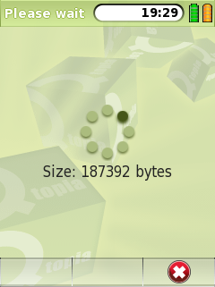

|
Home · All Namespaces · All Classes · Grouped Classes · Modules · Functions | |
The QWaitWidget class provides an informative idle screen for a slow operation. More...
#include <QWaitWidget>
Inherits QDialog.
The QWaitWidget class provides an informative idle screen for a slow operation.
A wait widget is used to give the user an indication that an operation is going to take some time, and to demonstrate that the application has not frozen. It can also give the user an opportunity to abort the operation when setCancelEnabled() is set to be true.
For example, construct a QWaitWidget to popup over parent.
QWaitWidget *waitWidget = new QWaitWidget(this);
waitWidget->show();
// do time consuming operations
delete waitWidget;
Use setText() and setCancelEnabled() to give more feedback and control to the user. For example,
QWaitWidget *waitWidget = new QWaitWidget(this);
waitWidget->setCancelEnabled( true );
waitWidget->setText( "Searching..." );
waitWidget->show();
QDir dir = QDir::current();
QFileInfoList list = dir.entryInfoList();
int totalSize = 0;
for ( int i = 0; i < dir.count(); i++ ) {
totalSize += list.at( i ).size();
waitWidget->setText( QString( "Size: %1 bytes" ).arg( QString::number(totalSize) ) );
}
waitWidget->hide();
The wait widget, in this example, emits a signal cancelled() when the user presses the Cancel button.

This property holds indicates whether the Cancel button appears on the context menu.
Access functions:
This property holds indicates whether the widget was cancelled by the user when it was last shown.
Access functions:
Constructs an QWaitWidget object with the given parent.
Destroys a QWaitWidget
This signal is emitted whenever the wait widget dialog is cancelled by user.
Hides the widget and its child widgets.
Blends the image with color col.
Hides the widget after msec.
Sets the informative text label for this wait widget.
Shows the widget and its child widgets. The widget is shown maximized.
| Copyright © 2009 Trolltech | Trademarks | Qt Extended 4.4.3 |